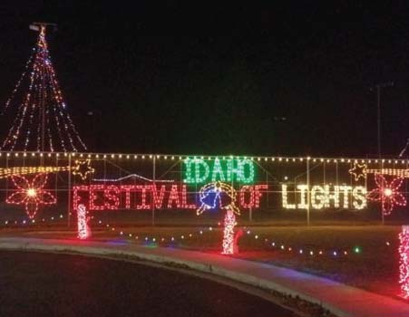

Festival Of Lights
Each year Preston holds the "Idaho Festival of Lights", which starts the day after Thanksgiving and goes until December 31. The festival was started by two local business men (Wayne Bell and Walter Ross) along with many other community organizations
to help celebrate Christmas within the community. The festival consists of a lighted parade, fireworks, and displays in the city park. The merchants along the main street of Preston have their store fronts decorated with Christmas lights
during the festival.
A key event of the festival is the International Bed Race, which is held on the Saturday following Thanksgiving on the main street of Preston. Additional events are a kids' parade and free movie.